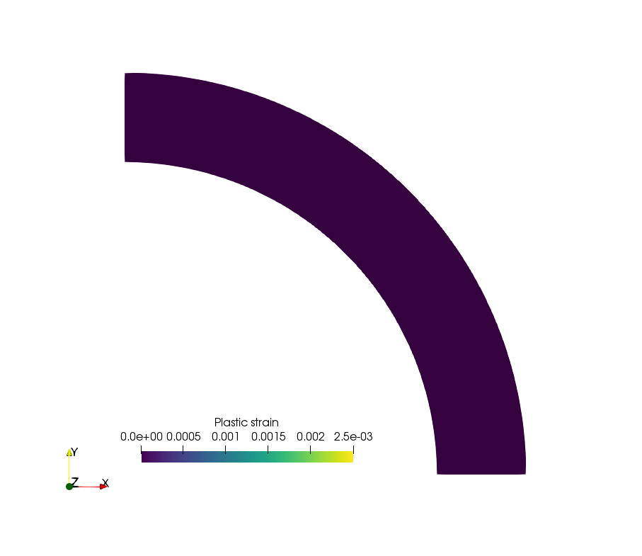
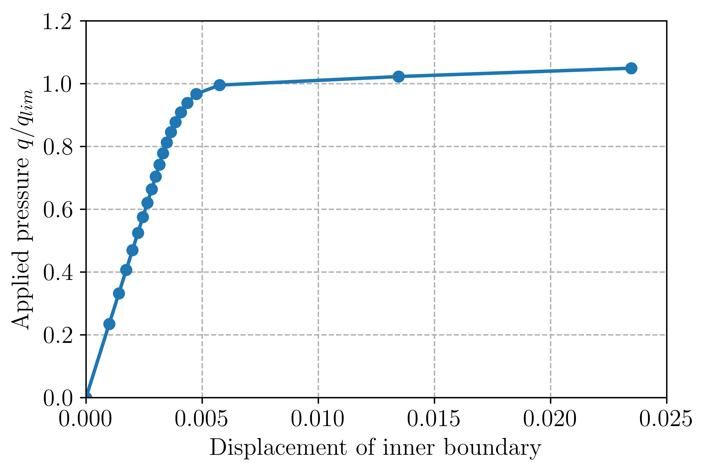

Elasto-plastic analysis of a 2D von Mises material¶
Introduction¶
This example is concerned with the incremental analysis of an elasto-plastic
von Mises material. The structure response is computed using an iterative
predictor-corrector return mapping algorithm embedded in a Newton-Raphson global
loop for restoring equilibrium. Due to the simple expression of the von Mises criterion,
the return mapping procedure is completely analytical (with linear isotropic
hardening). The corresponding file can be obtained from vonMises_plasticity.py.
Another implementation of von Mises plasticity can also be found at
https://bitbucket.org/fenics-apps/fenics-solid-mechanics.
We point out that the 2D nature of the problem will impose keeping track of the out-of-plane \(\varepsilon_{zz}^p\) plastic strain and dealing with representations of stress/strain states including the \(zz\) component. Note also that are not concerned with the issue of volumetric locking induced by incompressible plastic deformations since quadratic triangles in 2D is enough to mitigate the locking phenomenon.
The plastic strain evolution during the cylinder expansion will look like this:
{kind=link}
Problem position¶
In FEniCS 2017.2, the FEniCS Form Compiler ffc now uses uflacs as a default
representation instead of the old quadrature representation. However, using
Quadrature elements generates some bugs in this representation and we therefore
need to revert to the old representation. Deprecation warning messages are also disabled.
See this post
and the corresponding issue
for more information.:
from __future__ import print_function
from fenics import *
import numpy as np
parameters["form_compiler"]["representation"] = 'quadrature'
import warnings
from ffc.quadrature.deprecation import QuadratureRepresentationDeprecationWarning
warnings.simplefilter("once", QuadratureRepresentationDeprecationWarning)
The material is represented by an isotropic elasto-plastic von Mises yield condition of uniaxial strength \(\sigma_0\) and with isotropic hardening of modulus \(H\). The yield condition is thus given by:
where \(p\) is the cumulated equivalent plastic strain. The hardening modulus can also be related to a tangent elastic modulus \(E_t = \dfrac{EH}{E+H}\).
The considered problem is that of a plane strain hollow cylinder of internal (resp. external)
radius \(R_i\) (resp. \(R_e\)) under internal uniform pressure \(q\).
Only a quarter of cylinder is generated using Gmsh and converted to .xml format.
# elastic parameters
E = Constant(70e3)
nu = Constant(0.3)
lmbda = E*nu/(1+nu)/(1-2*nu)
mu = E/2./(1+nu)
sig0 = Constant(250.) # yield strength
Et = E/100. # tangent modulus
H = E*Et/(E-Et) # hardening modulus
Re, Ri = 1.3, 1. # external/internal radius
mesh = Mesh("thick_cylinder.xml")
facets = MeshFunction("size_t", mesh, "thick_cylinder_facet_region.xml")
ds = Measure('ds')[facets]
Function spaces will involve a standard CG space for the displacement whereas internal
state variables such as plastic strains will be represented using a Quadrature element.
This choice will make it possible to express the complex non-linear material constitutive
equation at the Gauss points only, without involving any interpolation of non-linear
expressions throughout the element. It will ensure an optimal convergence rate
for the Newton-Raphson method. See Chapter 26 of the FEniCS book.
We will need Quadrature elements for 4-dimensional vectors and scalars, the number
of Gauss points will be determined by the required degree of the Quadrature element
(e.g. degree=1 yields only 1 Gauss point, degree=2 yields 3 Gauss points and
degree=3 yields 6 Gauss points (note that this is suboptimal)):
deg_u = 2
deg_stress = 2
V = VectorFunctionSpace(mesh, "CG", deg_u)
We = VectorElement("Quadrature", mesh.ufl_cell(), degree=deg_stress, dim=4, quad_scheme='default')
W = FunctionSpace(mesh, We)
W0e = FiniteElement("Quadrature", mesh.ufl_cell(), degree=deg_stress, quad_scheme='default')
W0 = FunctionSpace(mesh, W0e)
Note
In older versions, it was possible to define Quadrature function spaces directly
using FunctionSpace(mesh, "Quadrature", 1). This is no longer the case since
FEniCS 2016.1 (see this issue). Instead, Quadrature elements must first be defined
by specifying the associated degree and quadrature scheme before defining the
associated FunctionSpace.
Various functions are defined to keep track of the current internal state and currently computed increments:
sig = Function(W)
sig_old = Function(W)
n_elas = Function(W)
beta = Function(W0)
p = Function(W0, name="Cumulative plastic strain")
u = Function(V, name="Total displacement")
du = Function(V, name="Iteration correction")
Du = Function(V, name="Current increment")
v = TrialFunction(V)
u_ = TestFunction(V)
Boundary conditions correspond to symmetry conditions on the bottom and left parts (resp. numbered 1 and 3). Loading consists of a uniform pressure on the internal boundary (numbered 4). It will be progressively increased from 0 to \(q_{lim}=\dfrac{2}{\sqrt{3}}\sigma_0\log\left(\dfrac{R_e}{R_i}\right)\) which is the analytical collapse load for a perfectly-plastic material (no hardening):
bc = [DirichletBC(V.sub(1), 0, facets, 1), DirichletBC(V.sub(0), 0, facets, 3)]
n = FacetNormal(mesh)
q_lim = float(2/sqrt(3)*ln(Re/Ri)*sig0)
loading = Expression("-q*t", q=q_lim, t=0, degree=2)
def F_ext(v):
return loading*dot(n, v)*ds(4)
Constitutive relation update¶
Before writing the variational form, we now define some useful functions which
will enable performing the constitutive relation update using a return mapping
procedure. This step is quite classical in FEM plasticity for a von Mises criterion
with isotropic hardening and follow notations from [BON2014]. First, the strain
tensor will be represented in a 3D fashion by appending zeros on the out-of-plane
components since, even if the problem is 2D, the plastic constitutive relation will
involve out-of-plane plastic strains. The elastic consitutive relation is also defined
and a function as_3D_tensor will enable to represent a 4 dimensional vector
containing respectively \(xx, yy, zz\) and \(xy\) components as a 3D tensor:
def eps(v):
e = sym(grad(v))
return as_tensor([[e[0, 0], e[0, 1], 0],
[e[0, 1], e[1, 1], 0],
[0, 0, 0]])
def sigma(eps_el):
return lmbda*tr(eps_el)*Identity(3) + 2*mu*eps_el
def as_3D_tensor(X):
return as_tensor([[X[0], X[3], 0],
[X[3], X[1], 0],
[0, 0, X[2]]])
The return mapping procedure consists in finding a new stress \(\boldsymbol{\sigma}_{n+1}\) and internal variable \(p_{n+1}\) state verifying the current plasticity condition from a previous stress \(\boldsymbol{\sigma}_{n}\) and internal variable \(p_n\) state and an increment of total deformation \(\Delta \boldsymbol{\varepsilon}\). An elastic trial stress \(\boldsymbol{\sigma}_{\text{elas}} = \boldsymbol{\sigma}_{n} + \mathbf{C}\Delta \boldsymbol{\varepsilon}\) is first computed. The plasticity criterion is then evaluated with the previous plastic strain \(f_{\text{elas}} = \sigma^{eq}_{\text{elas}} - \sigma_0 - H p_n\) where \(\sigma^{eq}_{\text{elas}} = \sqrt{\frac{3}{2}\boldsymbol{s}:\boldsymbol{s}}\) with the deviatoric elastic stress \(\boldsymbol{s} = \operatorname{dev}\boldsymbol{\sigma}_{\text{elas}}\). If \(f_{\text{elas}} < 0\), no plasticity occurs during this time increment and \(\Delta p,\Delta \boldsymbol{\varepsilon}^p =0\).
Otherwise, plasticity occurs and the increment of plastic strain is given by \(\Delta p = \dfrac{f_{\text{elas}}}{3\mu+H}\). Hence, both elastic and plastic evolution can be accounted for by defining the plastic strain increment as follows:
where \(\langle \star \rangle_+\) represents the positive part of \(\star\)
and is obtained by function ppos. Plastic evolution also requires the computation
of the normal vector to the final yield surface given by
\(\boldsymbol{n}_{\text{elas}} = \boldsymbol{s}/\sigma_{\text{elas}}^{eq}\). In the following,
this vector must be zero in case of elastic evolution. Hence, we multiply it by
\(\dfrac{\langle f_{\text{elas}}\rangle_+}{ f_{\text{elas}}}\) to tackle
both cases in a single expression. The final stress state is corrected by the
plastic strain as follows \(\boldsymbol{\sigma}_{n+1} = \boldsymbol{\sigma}_{\text{elas}} -
\beta \boldsymbol{s}\) with \(\beta = \dfrac{3\mu}{\sigma_{\text{elas}}^{eq}}\Delta p\).
It can be observed that the last term vanishes in case of elastic evolution so
that the final stress is indeed the elastic predictor.
ppos = lambda x: (x+abs(x))/2.
def proj_sig(deps, old_sig, old_p):
sig_n = as_3D_tensor(old_sig)
sig_elas = sig_n + sigma(deps)
s = dev(sig_elas)
sig_eq = sqrt(3/2.*inner(s, s))
f_elas = sig_eq - sig0 - H*old_p
dp = ppos(f_elas)/(3*mu+H)
n_elas = s/sig_eq*ppos(f_elas)/f_elas
beta = 3*mu*dp/sig_eq
new_sig = sig_elas-beta*s
return as_vector([new_sig[0, 0], new_sig[1, 1], new_sig[2, 2], new_sig[0, 1]]), \
as_vector([n_elas[0, 0], n_elas[1, 1], n_elas[2, 2], n_elas[0, 1]]), \
beta, dp
Note
We could have used conditionals to write more explicitly the difference between elastic and plastic evolution.
In order to use a Newton-Raphson procedure to resolve global equilibrium, we also need to derive the algorithmic consistent tangent matrix given by:
where \(\mathbf{DEV}\) is the 4th-order tensor associated with the deviatoric operator (note that \(\mathbf{C}_{\text{tang}}^{\text{alg}}=\mathbf{C}\) for elastic evolution). Contrary to what is done in the FEniCS book, we do not store it as the components of a 4th-order tensor but it will suffice keeping track of the normal vector and the \(\beta\) parameter related to the plastic strains. We instead define a function computing the tangent stress \(\boldsymbol{\sigma}_\text{tang} = \mathbf{C}_{\text{tang}}^{\text{alg}} \boldsymbol{\varepsilon}\) as follows:
def sigma_tang(e):
N_elas = as_3D_tensor(n_elas)
return sigma(e) - 3*mu*(3*mu/(3*mu+H)-beta)*inner(N_elas, e)*N_elas-2*mu*beta*dev(e)
Global problem and Newton-Raphson procedure¶
We are now in position to derive the global problem with its associated
Newton-Raphson procedure. Each iteration will require establishing equilibrium
by driving to zero the residual between the internal forces associated with the current
stress state sig and the external force vector. Because we use Quadrature
elements a custom integration measure must be defined to match the quadrature
degree and scheme used by the Quadrature elements:
metadata = {"quadrature_degree": deg_stress, "quadrature_scheme": "default"}
dxm = dx(metadata=metadata)
a_Newton = inner(eps(v), sigma_tang(eps(u_)))*dxm
res = -inner(eps(u_), as_3D_tensor(sig))*dxm + F_ext(u_)
The consitutive update defined earlier will perform nonlinear operations on
the stress and strain tensors. These nonlinear expressions must then be projected
back onto the associated Quadrature spaces. Since these fields are defined locally
in each cell (in fact only at their associated Gauss point), this projection can
be performed locally. For this reason, we define a local_project function
that use the LocalSolver to gain in efficiency (see also Efficient projection on DG or Quadrature spaces)
for more details:
def local_project(v, V, u=None):
dv = TrialFunction(V)
v_ = TestFunction(V)
a_proj = inner(dv, v_)*dxm
b_proj = inner(v, v_)*dxm
solver = LocalSolver(a_proj, b_proj)
solver.factorize()
if u is None:
u = Function(V)
solver.solve_local_rhs(u)
return u
else:
solver.solve_local_rhs(u)
return
Note
We could have used the standard project if we are not interested in optimizing
the code. However, the use of Quadrature elements would have required telling
project to use an appropriate integration measure to solve the global \(L^2\)
projection that occurs under the hood. This would have needed either redefining
explicitly the projection associated forms (as we just did) or specifiying the
appropriate quadrature degree to the form compiler as follows
project(sig_, W, form_compiler_parameters={"quadrature_degree":deg_stress})
Before defining the Newton-Raphson loop, we set up the output file and appropriate FunctionSpace (here piecewise constant) and Function for output of the equivalent plastic strain since XDMF output does not handle Quadrature elements:
file_results = XDMFFile("plasticity_results.xdmf")
file_results.parameters["flush_output"] = True
file_results.parameters["functions_share_mesh"] = True
P0 = FunctionSpace(mesh, "DG", 0)
p_avg = Function(P0, name="Plastic strain")
We now define the global Newton-Raphson loop. We will discretize the applied
loading using Nincr increments from 0 up to 1.1 (we exclude zero from
the list of load steps). A nonlinear discretization is adopted to refine the
load steps during the plastic evolution phase. At each time increment, the
system is assembled and the residual norm is computed. The incremental displacement
Du is initialized to zero and the inner iteration loop performing the constitutive
update is initiated. Inside this loop, corrections du to the displacement
increment are computed by solving the Newton system and the return mapping
update is performed using the current total strain increment deps. The resulting
quantities are then projected onto their appropriate FunctionSpaces. The Newton
system and residuals are reassembled and this procedure continues until the residual
norm falls below a given tolerance. After convergence of the iteration loop,
the total displacement, stress and plastic strain states are updated
Nitermax, tol = 200, 1e-8 # parameters of the Newton-Raphson procedure
Nincr = 20
load_steps = np.linspace(0, 1.1, Nincr+1)[1:]**0.5
results = np.zeros((Nincr+1, 2))
for (i, t) in enumerate(load_steps):
loading.t = t
A, Res = assemble_system(a_Newton, res, bc)
nRes0 = Res.norm("l2")
nRes = nRes0
Du.interpolate(Constant((0, 0)))
print("Increment:", str(i+1))
niter = 0
while nRes/nRes0 > tol and niter < Nitermax:
solve(A, du.vector(), Res, "mumps")
Du.assign(Du+du)
deps = eps(Du)
sig_, n_elas_, beta_, dp_ = proj_sig(deps, sig_old, p)
local_project(sig_, W, sig)
local_project(n_elas_, W, n_elas)
local_project(beta_, W0, beta)
A, Res = assemble_system(a_Newton, res, bc)
nRes = Res.norm("l2")
print(" Residual:", nRes)
niter += 1
u.assign(u+Du)
sig_old.assign(sig)
p.assign(p+local_project(dp_, W0))
Post-processing¶
Inside the incremental loop, the displacement and plastic strains are exported at each time increment, the plastic strain must first be projected onto the previously defined DG FunctionSpace. We also monitor the value of the cylinder displacement on the inner boundary. The load-displacement curve is then plotted:
file_results.write(u, t)
p_avg.assign(project(p, P0))
file_results.write(p_avg, t)
results[i+1, :] = (u(Ri, 0)[0], t)
import matplotlib.pyplot as plt
plt.plot(results[:, 0], results[:, 1], "-o")
plt.xlabel("Displacement of inner boundary")
plt.ylabel(r"Applied pressure $q/q_{lim}$")
plt.show()
The load-displacement curve looks as follows:
{kind=link}
It can also be checked that the analytical limit load is also well reproduced when considering a zero hardening modulus.